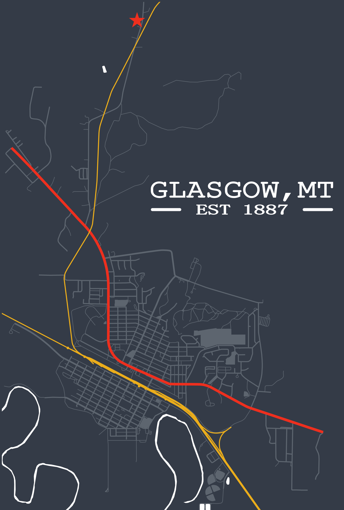
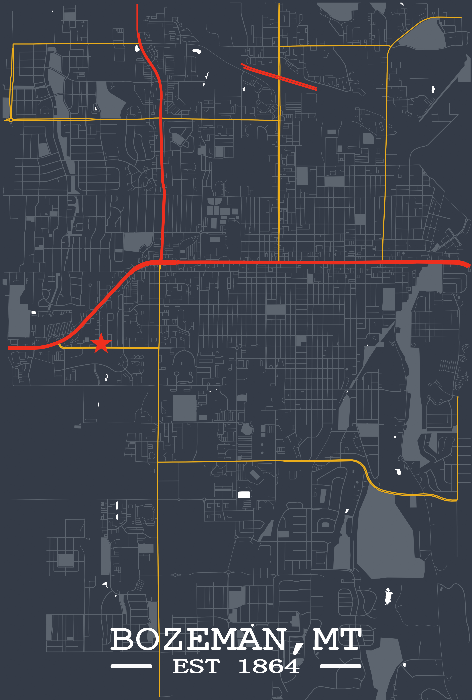

Sausalito, CA — Teal Brass
A dark, high-contrast palette with layered road and water features.
A Python-based map generation pipeline for creating stylized, high-resolution geographic artwork from real-world spatial data.
This project generates print-ready custom map artwork using geographic data, configurable visual styles, and optional location markers. The system was built as a flexible rendering pipeline that can adapt to different locations, aspect ratios, palettes, map features, and customer-requested design choices.
Rather than relying on manually edited screenshots, the workflow programmatically extracts and renders spatial data into clean, customizable compositions. This makes it possible to produce consistent visual outputs while still allowing each map to feel personal and location-specific.
A dark, high-contrast palette with layered road and water features.

A softer dark palette designed for a more decorative print style.

A minimal light-toned layout with subtle geographic layers.

An example of configurable marker shapes for personal locations.

A poster-style map with typography, highlighted roads, and landmark emphasis.

A larger city-scale composition with custom road styling and layout controls.